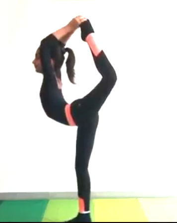

DANCER POSE

Steps to perform Dancer Pose
- Shift your weight onto the right foot. Bend your left knee to lift your left foot off the floor. Keep your left knee hugging toward your midline throughout this pose.
- Grasp the instep of your left foot with your left hand. Your thumb is resting on the sole of your foot and pointing in the direction of your toes.
- Lift your right arm straight up to the ceiling.
- Lift your left leg behind you as you bring your torso forward as a counterbalance. Remember that your left knee should not splay out to the side.
- Your right arm will also move forward.
- Kick your left foot strongly into your left hand to lift the leg higher and deepen the backbend. Keep your left toes active.
- Fix your gaze (Drishti) on something that doesn't move so that you don’t lose the balance.
- Hold 5 to 10 breaths.
- Keep kicking your left foot into your left hand to rise back up. Lower your left leg back in line with your right. Repeat the pose on the other side.